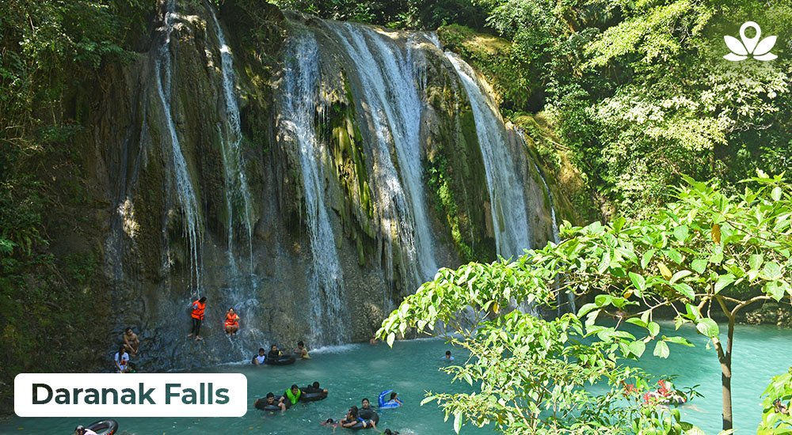

Masugi groove
Popular for its sharp, limestone rock formations, Masungi Georeserve is one of the best places to see in Rizal Philippines. A guide leads you in, around and through the cliffs to get to jaw-dropping, tree-filled views

Angono Petroglyphs
One of the best places to go in Rizal is the Angono Petroglyphs. Declared as a National Cultural Treasure and considered as one of the most endangered sites in the world, Rizal province houses some of the oldest known artwork in the Philippines.

Daranak falls
Daranak Falls comes on top of the list! This 46 ft. high waterfall is a perfect destination for a quick and refreshing dip. The falls are complemented by forest trees, flowering wild plants, as well as cascading rivers and ponds that will make you come back for more.